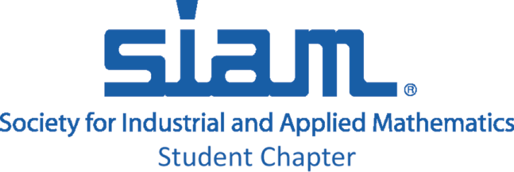

Python Tutorial
ACM/SIAM Student Chapter
KAUST | 2017
| Venue: | University Library Computer Room, |
| Level 3 | |
| Dates: | February 26 - March 2, 2017 |
| Registration | |
| How to install Python | |
 |
|  |
Announcements
[01/03/2017]: Tutorials for session 3 & 4 are now updated.
[28/02/2017]: Tutorials for session 1 & 2 are now updated, and all solutions for the exercises are available. Please check the git repository, re-download the zip/tar file or use the links in the schedule below.
[25/02/2017]: First day's tutorials have been added. Each tutorial consists of some small exercises. Solutions will be uploaded after each session.
[23/02/2017]: We appreciate your high interest for our Python tutorial! Please note that all tutorials are already full. New registration will go into a waiting list. If for any reason you are not able to attend a tutorial, please let us know in advance by sending an email to yiannis.hadjimichael@kaust.edu.sa.
[20/02/2017]: Please note that it is not required to bring your own laptop in any of our sessions. All necessary software can be installed to the library computer lab workstations. However, if you want to bring your laptop please follow the setup instructions.
[20/02/2017]: The ACM KAUST Student Chapter is pleased to invite you to take part in a week of Python tutorials, February 26 - March 2, 2017. Before attending, please register here .
Schedule & Structure
Topics covered:
- Basics of Python
- Packages for scientific computing: Numpy, Scipy, Matplotlib
- Visualization Tools
- Advanced Topics: Object Oriented Programming, Optimization, Machine Learning
- MPI for Python
The first day the basics of Python and most popular packaged for scientific computing are covered with many quick hands-on exercises. The second day discusses plotting and visualization and object-oriented programming. The last day covers advanced topics in optimization, machine learning, and parallel computing.
There will be 10-minute of Q&A at the end of each session. The first five sessions are hands-on tutorials. The last session will be a presentation about MPI for Python.
| Day 1: Sunday, 26th February | |||
|---|---|---|---|
| 10:30 - 12:00 | Basics: Introduction to Python | Liam Mencel | Add to calendar |
| 14:30 - 16:00 | Basics: NumPy & SciPy | Dmitry Kabanov | Add to calendar |
| Day 2: Tuesday, 28th February | |||
| 09:30 - 11:00 | Plotting and Visualization | Yiannis Hadjimichael | Add to calendar |
| 15:00 - 16:30 | Object Oriented Programming | Maxat Kulmanov | Add to calendar |
| Day 3: Thursday, 2nd March | |||
| 10:30 - 12:00 | Advanced Topics: Optimization & Machine Learning |
Uchenna Akujuobi, Yiannis Hadjimichael |
Add to calendar |
| 14:30 - 16:30 | Advanced Topics: MPI for Python | Lisandro Dalcin | Add to calendar |
Description
Day 1: Basics
This is a beginners' level tutorial where we focus on the basic syntax of the language and essential functionality, as well as the fundamental packages NumPy & SciPy. The first session targets to give a comprehensive intro, while second one focuses on specific and interesting examples.
Session I: Getting started with Python: Using iPython notebook,
syntax, libraries, I/O.
Session II: Packages for scientific computing: NumPy & SciPy.
Day 2: Plotting and Object-Oriented Programming (OOP)
The second day focuses on using Python for data visualization and introduces the widely used Matplotlib and other packages such as Seaborn. During the first session we will discuss the main Python graphics concepts such as figures, axes, etc., and will work through a number of quick examples. In the second session we introduce object-oriented programming (OOP), classes and objects, functions, scopes and closures, as well as cover useful logging techniques.
Session I: Introduction to Python plotting and visualization
packages: Matplotlib, Seaborn.
Session II: Object-Oriented Programming: classes, objects, functions
Day 3: Optimization, Machine learning & MPI for Python
During the first part of this session we will cover optimization using SciPy and APMonitor Optimization Suite. In the last part we will focus on some machine learning techniques with Scikit-Learn. Finally the tutorials will close with a lecture about parallel processing in Python using Message Passing Interface (MPI) by Lisandro Dalcin.
Session I: Advanced Topics: Optimization & machine learning
Session II: Advanced Topics: MPI for Python
We hope that you will enjoy the tutorials and will learn skills you can apply in your
daily research and programming.
Looking forward to seeing you there!